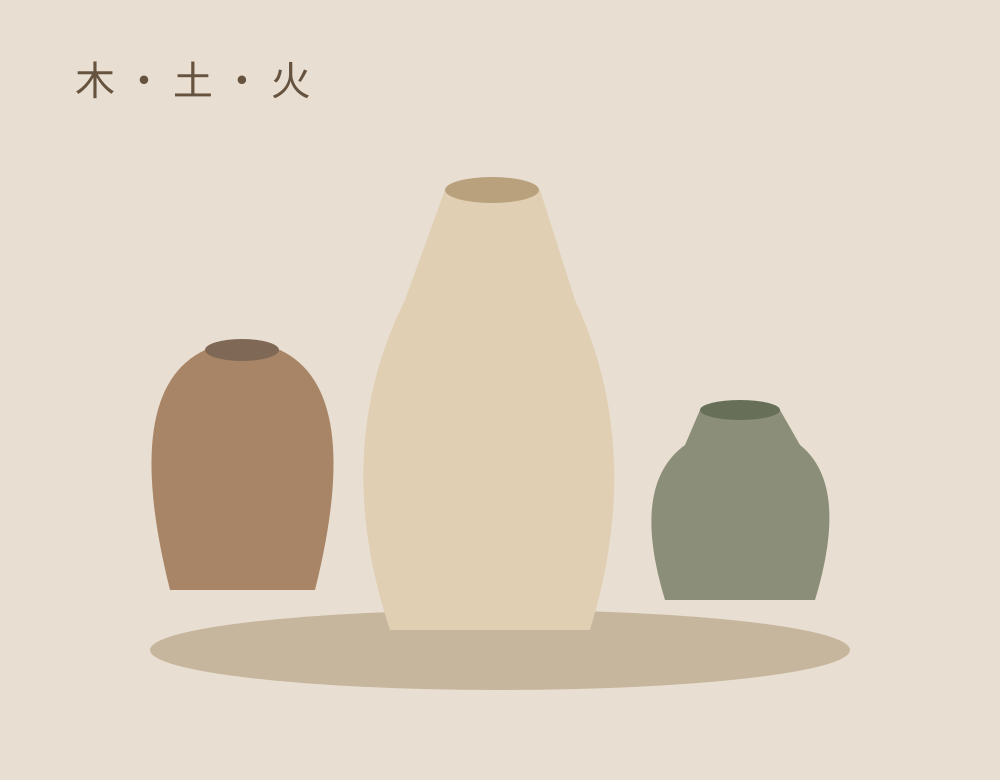

陶作・器物工作室
揉土、修形、等一場窯火。讓不完美的線條，成為獨一無二的日常。

木禾手作・生活提案
揉土、修形、等一場窯火。讓不完美的線條，成為獨一無二的日常。喜歡的生活，不一定要很用力；留一點空白，日常也能慢慢長出自己的樣子。
小小的發現
給自己一點不趕時間的空間，看看此刻真正喜歡什麼。
順著好奇心，讓熟悉的生活多一個新的角度。
把喜歡的感覺帶回日常，慢慢變成自己的節奏。
給日常的一封小邀請
器物，是時間的另一種形狀。今天不必急著決定，先看看哪個方向讓你心情輕一點。